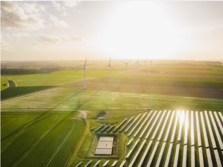
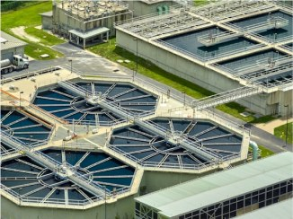
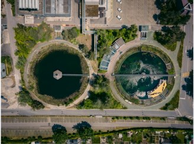
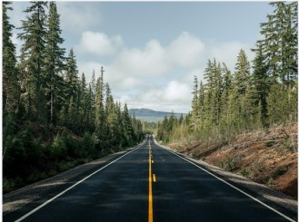
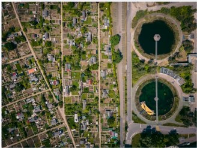
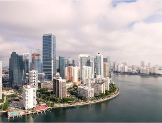
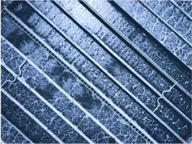

New Jersey, NJ
Removing Lead Service Lines in North Jersey
To protect public health and ensure the long-term delivery of safe, high-quality water, Passaic Valley Water Commission (PVWC) launched a lead service line repla…
View Project →Home › Projects
Showing 1-12 of 48 results
New Jersey, NJ
To protect public health and ensure the long-term delivery of safe, high-quality water, Passaic Valley Water Commission (PVWC) launched a lead service line repla…
View Project →Memphis, TE
By implementing powerful, innovative peracetic acid disinfection, two major water reclamation facilities in Memphis will be feeding disinfected, clean water to th…
View Project →
Los Angeles, CA
The city of Los Angeles currently imports half of its water supply. By 2035, city officials have set a course to drastically reduce that amount and replace it with loca…
View Project →
Hartford, CT
The Metropolitan District Commission (MDC) of greater Hartford, Connecticut has been engaged with CDM Smith since 2005 in a wide-ranging wet weather infras…
View Project →
Seattle, WA
CDM Smith is evaluating better parking, pedestrian, bike and transit approaches to improve access to two high-demand Puget Sound region commuter rail statio…
View Project →
Austin, TX
The City of Austin is embarking on a multi-phased project to restore and enhance urban watersheds, aiming to improve water quality, reduce flooding, and…
View Project →
Philadelphia, PA
Philadelphia is implementing green infrastructure practices, including rain gardens and green roofs, to manage stormwater runoff effectively.
View Project →Miami, FL
To combat rising sea levels and frequent flooding, Miami is developing a series of innovative flood management solutions to improve drainage systems.
View Project →
Chicago, IL
The City of Chicago is enhancing its water quality monitoring systems with advanced technology to ensure safe drinking water.
View Project →San Francisco, CA
San Francisco is implementing a comprehensive stormwater capture program aimed at utilizing rainwater for irrigation and reducing urban runoff.
View Project →
Denver, CO
Denver Water is launching an initiative to expand its water supply by promoting reuse and conservation practices among residents, ensuring sustainable water…
View Project →Phoenix, AZ
Phoenix is adopting advanced water harvesting techniques to maximize the efficient use of rainwater, aiming to enhance resilience against prolonged droug…
View Project →We love collaborating with passionate individuals and organizations. If you're interested in joining our team, check our careers page for open positions or internships.